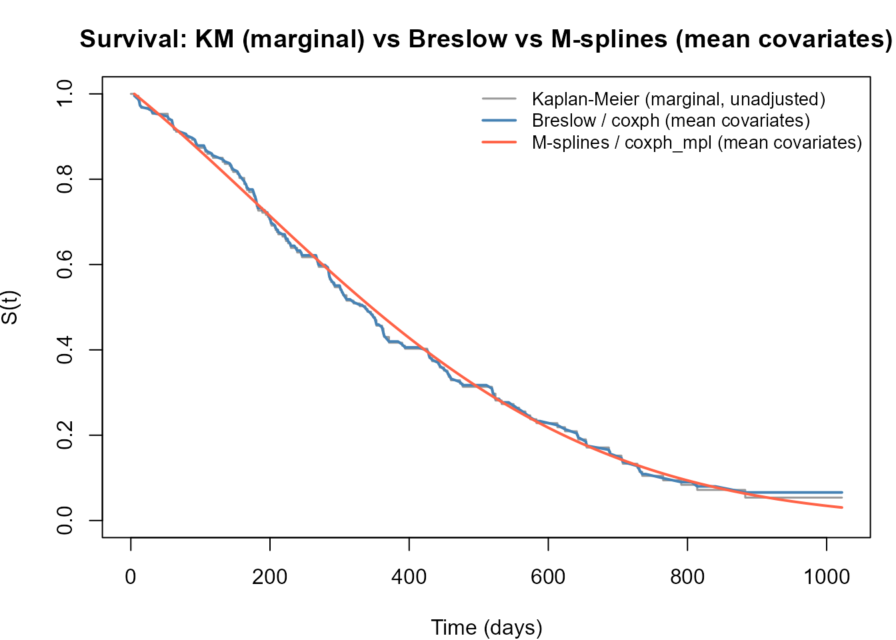

Comparing coxph and coxph_mpl
coxph-comparison.RmdOverview
survival::coxph() maximises the partial
likelihood - a function of regression coefficients
only, with the baseline hazard
profiled out. survivalMPL::coxph_mpl() maximises the
penalised full likelihood, estimating
and
jointly via a smooth basis expansion.
For right-censored data with non-informative censoring the two
approaches produce essentially the same
and standard errors (Ma et al. 2014),
while coxph_mpl additionally delivers a smooth, closed-form
that can be plotted and predicted without additional
post-processing.
This tutorial uses the lung dataset
(survival package) - 228 patients with advanced lung
cancer, right-censored overall survival to compare:
- Regression coefficient estimates and standard errors.
- 95 % confidence intervals (forest plot).
- Estimated baseline survival: Kaplan–Meier, Breslow (from
coxph), and M-spline (fromcoxph_mpl).
Data and model fits
library(survivalMPL)
#> Loading required package: survival
#> Loading required package: MASS
library(survival)
lung <- na.omit(lung[, c("time", "status", "age", "sex", "ph.karno", "wt.loss")])
f <- Surv(time, status == 2) ~ age + sex + ph.karno + wt.loss
# --- partial likelihood (coxph) ---
fit_pl <- coxph(f, data = lung, x = TRUE)
# --- penalised full likelihood, M-splines (coxph_mpl) ---
fit_mpl <- coxph_mpl(f, data = lung,
control = coxph_mpl.control(
basis = "msplines",
n.obs = sum(lung$status == 2),
max.iter = c(150, 7.5e4, 1e6)
)
)Regression coefficients and standard errors
beta_pl <- coef(fit_pl)
se_pl <- sqrt(diag(vcov(fit_pl)))
beta_mpl <- coef(fit_mpl)
se_mpl <- fit_mpl$se$Beta$M2HM2
row_labels <- c(
age = "Age (per year)^a^",
sex = "Sex",
ph.karno = "Karnofsky score (per point)^a^",
wt.loss = "Weight loss (kg)"
)
tab <- data.frame(
Covariate = row_labels[names(beta_pl)],
`PL β` = round(beta_pl, 4),
`PL SE` = round(se_pl, 4),
`MPL β` = round(beta_mpl, 4),
`MPL SE` = round(se_mpl, 4),
`Δβ` = round(beta_mpl - beta_pl, 4),
check.names = FALSE,
row.names = NULL
)
knitr::kable(tab, align = "lrrrrr",
caption = "^a^ The forest plot rescales these covariates to per-10-unit changes.")| Covariate | PL β | PL SE | MPL β | MPL SE | Δβ |
|---|---|---|---|---|---|
| Age (per year)a | 0.0151 | 0.0098 | 0.0148 | 0.0099 | -0.0004 |
| Sex | -0.5140 | 0.1744 | -0.4964 | 0.1735 | 0.0175 |
| Karnofsky score (per point)a | -0.0129 | 0.0062 | -0.0107 | 0.0061 | 0.0022 |
| Weight loss (kg) | -0.0022 | 0.0064 | -0.0010 | 0.0063 | 0.0012 |
The estimates agree closely: the full-likelihood approach recovers
the same regression signal as partial likelihood, with near-identical
standard errors. The MPL SE reported here uses the sandwich
variance estimator for a fixed smoothing parameter derived in Ma et al. (2014) (equation 29), accessed via
se = "M2HM2" in the package.
Baseline survival comparison
Three survival estimators are overlaid:
- Kaplan–Meier - nonparametric marginal estimate, no covariate adjustment. Serves as a visual reference for the raw data.
-
Breslow - step-function baseline from
coxphevaluated at mean covariates viasurvfit(). This is the standard Cox output for . -
M-splines (MPL) - smooth closed-form estimate from
coxph_mpl, also evaluated at mean covariates.
Breslow and M-splines estimate the same quantity and should track each other closely. Kaplan–Meier sits apart because it does not adjust for covariates.

The Breslow estimate is a step function that jumps only at observed event times. The M-spline estimate is smooth by construction and closely tracks the Breslow curve, while avoiding the staircase artefacts that arise from tied or sparse event times. The Kaplan–Meier curve sits above both because it is not adjusted for covariates - in particular it does not account for the protective effect of female sex and higher Karnofsky score at the mean covariate profile.